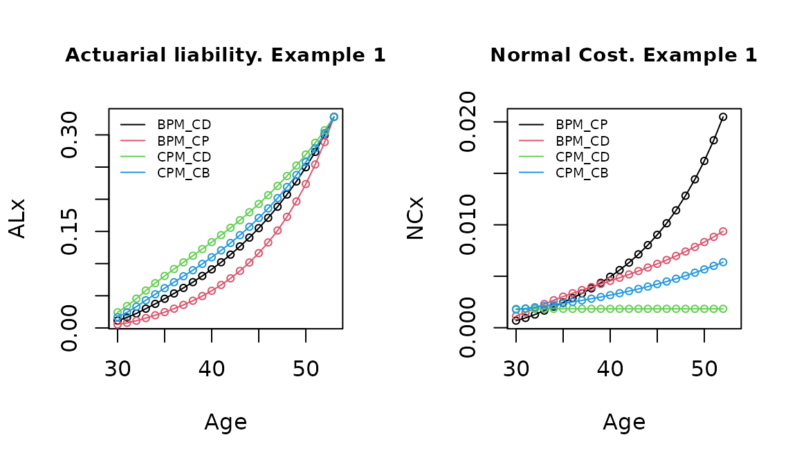
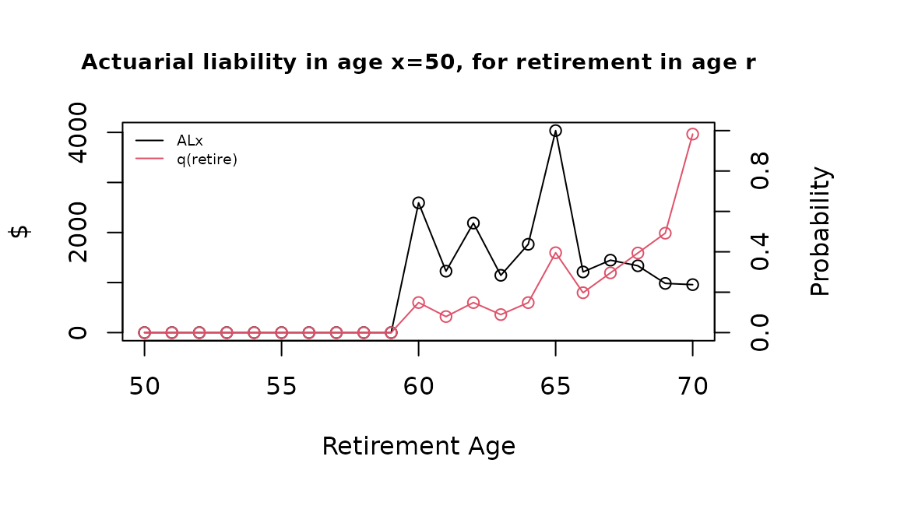

vignettes/PensionPlanVal.Rmd
PensionPlanVal.RmdIn this brief document we present a general function to valuate actuarial liabilities and normal costs, allowing different methods in pension funding for defined benefit schemes.
Each method is defined by the way that contributions are accrued in the active age before the specific risk apply. Following (Winklevoss 1993) and (Bowers et al. 1997), the Normal Cost and Actuarial Liability can be seen as portions of , the present value of future benefit at age for the risk in , and that’s the way that we treat this in the function’s code. The methods that are implemented here are the “Benefit Prorate Method, Constant Dollar”, “Benefit Prorate Method, Constant Percent”, “Cost Prorate Method, Constant Dollar” and “Cost Prorate Method, Constant Benefit” (the last two also called “entry age methods”). For formula details the reader can go to chapters 5 and 6 on (Winklevoss 1993).
We define a general function that allows to perform the calculations in a multi-decrement environment, with flexibility to consider different kind of benefit scheme, using functions of the “lifecontingencies” package (Spedicato et. al., 2018). The arguments (following general notation in Gian Paolo Clemente’s vignette titled “Pension Funding with lifecontingencies”) are:
The general function is:
require("lifecontingencies")
PensFund <- function(x, y, r, acttableAccPeriod, decrement, i, j, delta, n, avg,
acttablePaymPeriod, CostMet) {
if (missing(n))
n <- getOmega(acttableAccPeriod) - x - 1
if (x < y)
stop("Entry age greater than actual age")
if (missing(decrement))
stop("Which is the contingency of benefit?")
if (class(acttableAccPeriod) != "mdt")
stop("Error! Needed Mdt")
if (!(decrement %in% getDecrements(acttableAccPeriod)))
stop("Error! Not recognized decrement type")
if (missing(acttableAccPeriod))
stop("Error! Need a lifetable or actuarialtable")
if (missing(x) | missing(y))
stop("Error! Need age and seniority!")
if (x > getOmega(acttableAccPeriod)) {
out = 0
return(out)
}
if (missing(CostMet))
CostMet = "BPM_CD"
if (missing(avg))
stop("Error! Need avg period of computing benefit")
if (missing(j))
stop("Error! Need average salary increase rate")
if (any(x < 0, y < 0, avg < 0, delta < 0))
stop("Error! Negative parameters")
########## survive all casuses
acttableAccPeriodTotal = pxt(acttableAccPeriod, x = 0:(getOmega(acttableAccPeriod)),
t = 1)
acttableAccPeriodTotal = probs2lifetable(acttableAccPeriodTotal, type = "px")
if (missing(acttablePaymPeriod))
acttablePaymPeriod = acttableAccPeriodTotal
########## Set benefit fix age valuation
x0 = x
B = ifelse(avg == 0, 1, (1 + j)^(r - x0) * annuity(j, avg, m = 0, k = 1, type = "immediate")/avg)
q.r = qxt(object = acttableAccPeriod, x = r, t = 1, decrement = decrement)
Br = q.r * axn(acttablePaymPeriod, r, i = (1 + i)/(1 + delta) - 1, n = n, k = 1) *
B
########## Actuarial liability in age x, fot the age r (r>=x)
ALyNC.x.r = function(x, r) {
## PVFB
PVFB.x = Exn(acttableAccPeriodTotal, x, r - x, i = i) * Br
## Normal Costs and liabilities under Actuarial Cost Methods
if (CostMet == "BPM_CD") {
K <- (x - y)/(r - y)
k <- 1/(r - y)
}
if (CostMet == "BPM_CP") {
K <- (1 + j)^(x - x0) * annuity(j, x - y + 1, m = 0, k = 1, type = "immediate")/((1 +
j)^(r - x0) * annuity(j, r - y + 1, m = 0, k = 1, type = "immediate"))
k <- (1 + j)^(x - x0)/(annuity(j, r - y, m = 0, k = 1, type = "immediate") *
(1 + j)^(r - x0))
}
if (CostMet == "CPM_CD") {
K <- axn(acttableAccPeriodTotal, y, i = i, n = x - y, k = 1)/axn(acttableAccPeriodTotal,
y, i = i, n = r - y, k = 1)
k <- Exn(acttableAccPeriodTotal, y, x - y, i = i)/axn(acttableAccPeriodTotal,
y, i = i, n = r - y, k = 1)
}
if (CostMet == "CPM_CB") {
K <- axn(acttableAccPeriodTotal, y, i = (1 + i)/(1 + j) - 1, n = x -
y, k = 1)/axn(acttableAccPeriodTotal, y, i = (1 + i)/(1 + j) - 1,
n = r - y, k = 1)
k <- Exn(acttableAccPeriodTotal, y, x - y, i = i) * (1 + j)^(x - y)/axn(acttableAccPeriodTotal,
y, i = (1 + i)/(1 + j) - 1, n = r - y, k = 1)
}
## Results
outAL.x.r <- PVFB.x * K
outNC.x.r <- PVFB.x * k
outPVFB.x <- PVFB.x
out.x.r <- c(outAL.x.r, outNC.x.r, outPVFB.x)
return(out.x.r)
}
######## AL y NC for the rest of ages
ages_risk = x:r
outAL.x = sapply(ages_risk, function(x) ALyNC.x.r(x, r)[1])
outNC.x = sapply(ages_risk, function(x) ALyNC.x.r(x, r)[2])
outPVFB.x = sapply(ages_risk, function(x) ALyNC.x.r(x, r)[3])
outNC.x[length(ages_risk)] = NA
out.x <- data.frame(x = ages_risk, AL = outAL.x, NC = outNC.x, PVFB = outPVFB.x)
return(out.x)
}A first example of application is of a person aged 30 (entered to job at age 20), with a benefit in case of disability, that is the average of the last 5 salaries before get disabled. For calculate that we’ll use the multi-decrement table ‘SoAISTdata’ for the accrued period and ‘soa08’ for the payment period, both available in “lifecontingencies” package.
data(SoAISTdata)
data(soa08)
MultiDecrTable <- new("mdt", name = "testMDT", table = SoAISTdata)
#> Added fictional decrement below last x and completed x and lx until zero....The specific name of this risk in the table is ‘inability’.
getDecrements(MultiDecrTable)
#> [1] "death" "withdrawal" "inability" "retirement"Now we calculate the liability and normal cost with the four methods, and , , , . In this case for the age risk 53 ().
x1=30
y1=20
r1=53
decrement1 = "inability"
BPM_CD = PensFund(x1, y1, r1, acttableAccPeriod = MultiDecrTable, decrement = decrement1,
i = .04, j = .06, delta = .03, avg = 5,
acttablePaymPeriod = soa08, CostMet = 'BPM_CD')
BPM_CP = PensFund(x1, y1, r1, acttableAccPeriod = MultiDecrTable, decrement = decrement1,
i = .04, j = .06, delta = .03, avg = 5,
acttablePaymPeriod = soa08, CostMet = 'BPM_CP')
CPM_CD = PensFund(x1, y1, r1, acttableAccPeriod = MultiDecrTable, decrement = decrement1,
i = .04, j = .06, delta = .03, avg = 5,
acttablePaymPeriod = soa08, CostMet = 'CPM_CD')
CPM_CP = PensFund(x1, y1, r1, acttableAccPeriod = MultiDecrTable, decrement = decrement1,
i = .04, j = .06, delta = .03, avg = 5,
acttablePaymPeriod = soa08, CostMet = 'CPM_CB')The way that each method amortize the benefit cost in active years can be seen in the next graph, showing the liability accumulated relationship between at any age: “CPM_CD” “CPM_CB” “BPM_CD” “BPM_CP”.

We can check the results with actuarial equivalences, specifically the formulas (6.3a) and (6.4a) in (Winklevoss 1993), which means that the actuarial liability at any time can be expressed as the difference between the present value of future benefit and the present value of future normal costs, and as the actuarial value of past normal costs (retrospective view).
# AL = PVBF - PVFNC first get survivial for all causes
acttableAccPeriodTotal = pxt(MultiDecrTable, x = 0:(getOmega(MultiDecrTable)), t = 1)
acttableAccPeriodTotal = probs2lifetable(acttableAccPeriodTotal, type = "px")
# are equal?
round(BPM_CD$AL[1], 10) == round(BPM_CD$PVFB[1] - sum(sapply(x1:(r1 - 1), function(x) Exn(acttableAccPeriodTotal,
x1, x - x1, i = 0.04) * BPM_CD$NC[x - x1 + 1])), 10)
#> [1] TRUE
# Restrospective AL First get the liability at entry age y
BPM_CD_y = PensFund(y1, y1, r1, acttableAccPeriod = MultiDecrTable, decrement = decrement1,
i = 0.04, j = 0.06, delta = 0.03, avg = 5, acttablePaymPeriod = soa08, CostMet = "BPM_CD")
# are equal?
round(BPM_CD_y$AL[BPM_CD_y$x == 45], 10) == round(sum(sapply(y1:44, function(y) (1.04)^(45 -
y)/pxt(acttableAccPeriodTotal, y, 45 - y) * BPM_CD_y$NC[BPM_CD_y$x == y])), 10)
#> [1] TRUENow we’ll evaluate a retirement pension, that receives a payment grade which is a lineal function between age 60 and the maximum possible age of retirement at 70, and goes from 50% to 100%. This is not a grading function in which benefit provided at early or late retirement has the same present value as the benefit payable at normal retirement ((Winklevoss 1993), chapter 9). Instead, here the person is penalyzed for early retirement. The insured has an annual salary of 5000 at age . Also there is a seniority condition of 10 years. The other parameters are the same that the previous example.
x2 = 50
y2 = 35
decrement2 = "retirement"
pay_grade = data.frame(x = x2:70, gr = c(rep(0, 10), seq(0.5, 1, 0.05)))
snty_req = 20
s_x = 5000
Cost_Method2 = "BPM_CD"The calculation now focus on estimate the actuarial values at age , for all the retirement scheme (all ages between and 70).
AL_xr = data.frame(r = 0, AL = 0, NC = 0)
for (r in x2:70) {
if ((r - y2) < snty_req)
AL_xr[r - x2 + 1, 2:3] = c(0, 0) else {
AL_xr[r - x2 + 1, 2:3] = s_x * pay_grade[pay_grade$x == r, 2] * PensFund(x2,
y2, r, acttableAccPeriod = MultiDecrTable, decrement = decrement2, i = 0.04,
j = 0.06, delta = 0.03, avg = 5, acttablePaymPeriod = soa08, CostMet = Cost_Method2)[1,
2:3]
}
AL_xr[r - x2 + 1, 1] = r
}The total liability at age x is 1.88917^{4} and is distributed between this retirement options, influenced by the progressive function of the early retirement pay_grade) and the individual’s expected behavior (probability of retirement).

Now let’s imagine that the same insured has the benefit of receive a 50% of his/her last salary at each age before retirement if he decide to leave the Company. The benefit is in concept of recognition of past contributions to the pension plan. This benefit can be estimated setting (no rent, a single payment) and (only last salary). For example, for the risk of withdrawal at age 45:
decrement3 = "withdrawal"
x3 = 30
y3 = 20
r3 = 45
BPM_CP3 = s_x * 0.5 * PensFund(x3, y3, r3, acttableAccPeriod = MultiDecrTable, decrement = decrement3,
i = 0.04, j = 0.06, delta = 0.03, avg = 0, n = 1, acttablePaymPeriod = soa08,
CostMet = "BPM_CP")The following improvements are planned: